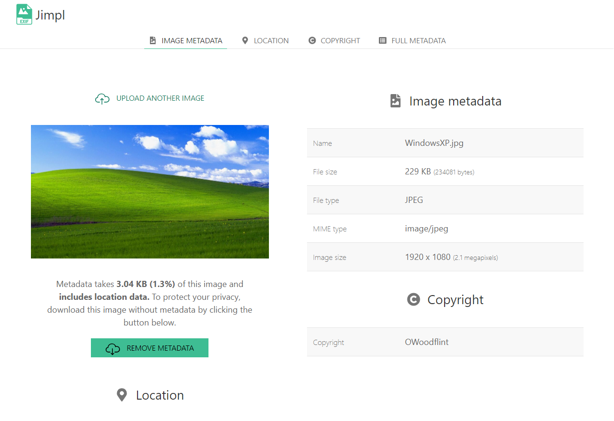
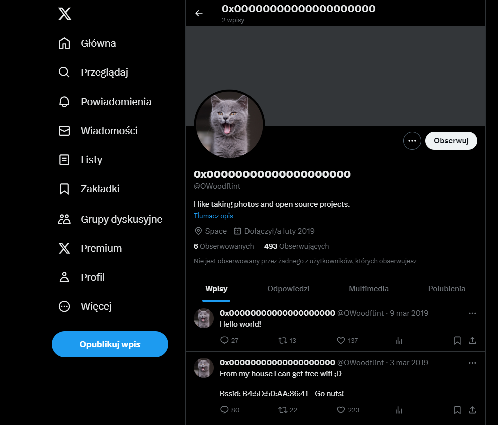
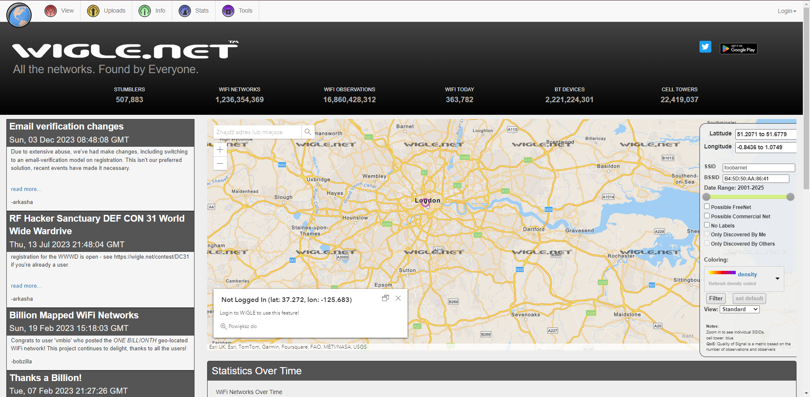
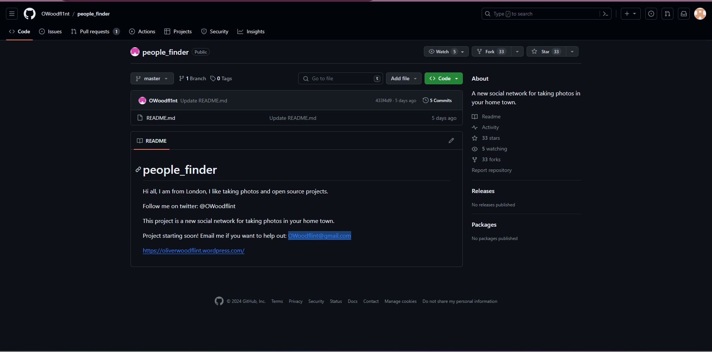
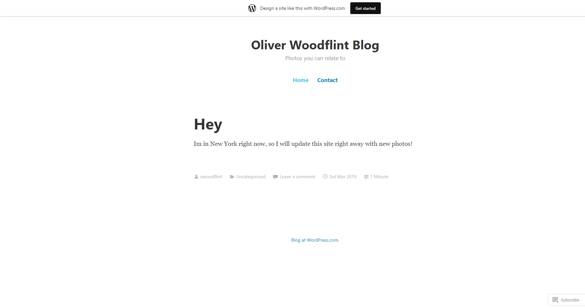
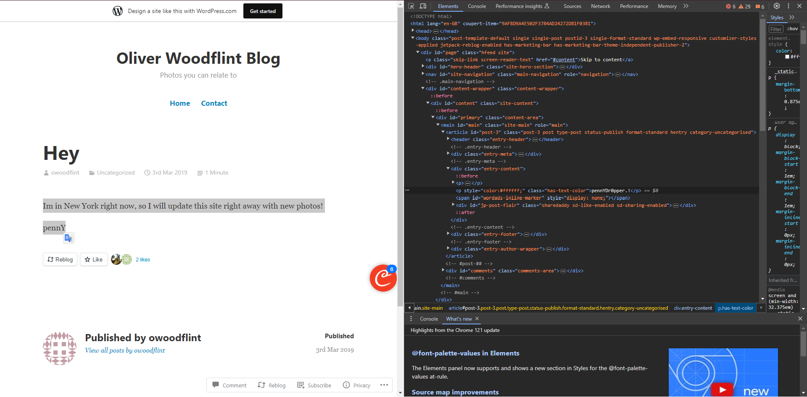

Prosty CTF z kategori OSINT
2024-02-06
Na samym początku zadania pobrałem zdjęcie i sprawdziłem jego metadane które między innymi nakierowały mnie na twórcę tego pięknego zdjęcia, czyli niejakiego OWoodflint
Następnym zadanie było napisanie co zawiera profilowe autora. Po wpisaniu nazwy w googla znalałem konto na Twitterze którego profilowe przedstawiało kota oraz wpis który był podpowiedzią do następnego zadania.
Wpis ten zawierał BSSID czyli niepowtarzalny identyfikator urządzenia bezprzewodowego. Identyfikator ten z pomocą aplikacji wigle.net pozwolił na zlokalizowanie miasta w którym mieszka autor zdjęca.
Następnym zadaniem było podanie emaila twórcy zdjęcia, w poszukiwaniu następnym mediów społecznościowych znalazłem konto Github na którym zosatł podany email w celach kontaktowych oraz link do bloga.
Po wejściu na stronę internetową znalazłem odpowiedzi na dwa ostanie zadanie. Gdzie autor był na wakacjach:
Oraz hasło któreg zostało ukryte w mało bezpieczny sposób czyli po prostu jako biały tekst na białym tle.
Źródło: https://tryhackme.com/room/ohsint